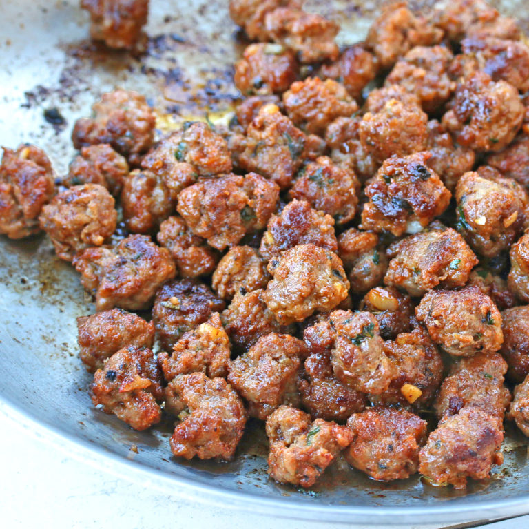

Italian Sausage

Baked Italian sausage with onions and peppers
Ingredients
- Italian Sausage
- Onion
- Green Pepper
- salt, pepper, olive oil
Steps
- Chop Onions and Peppers
- Mix veggies into a bowl
- Add some olive oil, salt, and pepper to bowl and mix up veggies
- layer veggies into oven pan, add sausage on top
- Cook at 400F for 30 minutes, turn sausages half way through
- Let them cool down for 10 minutes and then enjoy!